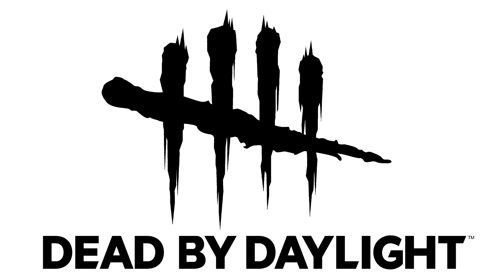
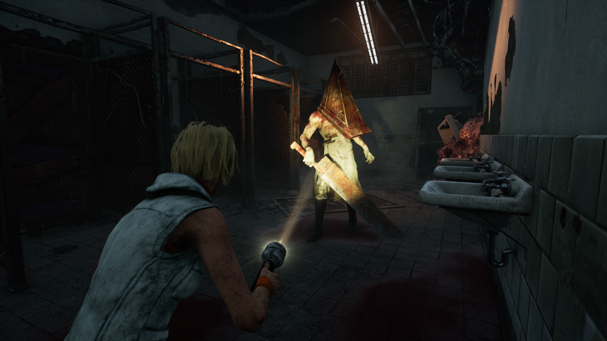

Dead by Daylight to asymetryczna gra multiplayer stworzona przez Behaviour Interactive. W rozgrywce bierze udział pięciu graczy: jeden wciela się w zabójcę (Killer), a pozostali czterej są ocalałymi (Survivors), których zadaniem jest naprawić generatory i uciec z pola gry.
Gra łączy horror z elementami taktycznymi i kooperacją. Każda runda jest losowo generowana (mapy, przedmioty, dodatki), co utrzymuje wysoki poziom napięcia i regrywalności.
Rozgrywka polega na naprawianiu pięciu generatorów, unikaniu zabójcy i ratowaniu współgraczy z haka. Zabójca ma unikalne umiejętności i styl gry; Survivors natomiast używają przedmiotów, perków i technik skradania się.
W grze występuje system perków i przedmiotów, które można modyfikować oraz stosunkowo głęboki system rozwoju postaci (Bloodweb), co daje dużą różnorodność rozgrywki.
Podstawowy tryb to 4v1, lecz gra posiada również eventy czasowe, tryby rankingowe i współpracę w społeczności (klany, poradniki). Wydawane są regularne aktualizacje — nowe mapy, postacie (licensed characters), kosmetyki i balans rozgrywki.
Aktywna społeczność tworzy poradniki, buildy perków oraz materiały video, dzięki czemu gracze szybko uczą się kontrów i nowych mechanik.
Dead by Daylight to tytuł płatny z mikropłatnościami (skórki, przedmioty kosmetyczne). Twórcy stale rozwijają grę przez DLC i dodatki tematyczne (w tym współprace z popularnymi markami horrorowymi).
Model biznesowy łączy płatne rozszerzenia z systemem kosmetyków, co przyciąga zarówno graczy casualowych, jak i społeczność hardcore.
Gra jest chwalona za unikalny koncept i napięcie rozgrywki, choć krytykowana bywa za balans i elementy losowości. Dla fanów horroru i kooperacji to pozycja obowiązkowa.


| Właściwość | Wartość |
|---|---|
| Gatunek | Asymetryczny horror multiplayer |
| Deweloper | Behaviour Interactive |
| Data premiery | 2016 |
| Platformy | PC, PS4/PS5, Xbox One/Series, Nintendo Switch |
| Maks. graczy | 5 (1 Killer + 4 Survivors) |